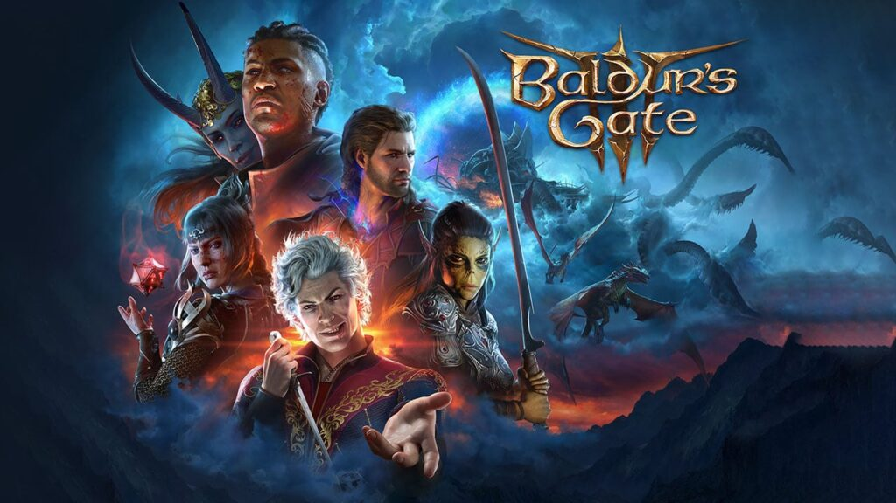

Video-games
Os videogames oferecem uma diversidade incrível de experiências e de entretenimento,
abrangendo uma ampla gama de gêneros, desde aventuras épicas até desafios mentais e
momentos de pura diversão. Com narrativas imersivas, combates intensos e quebra-cabeças
desafiadores, os jogos cativam jogadores de todas as idades e origens, continuando a ser uma
das formas de entretenimento mais populares e influentes da atualidade.
Abaixo segue uma tabela dos possíveis melhores jogos de 2023
| Classificação | Jogo | Pontuação |
|---|---|---|
| 1 | Baldur’s Gate 3 | 96 |
| 2 | The Legend of Zelda: The Tears of the Kingdom | 96 |
| 3 | Metroid Prime Remastered | 94 |
| 4 | Resident Evil 4 | 93 |
| 5 | Super Mario Bros. Wonder | 92 |
| 6 | Street Fighter 6 | 92 |
| 7 | Marvel’s Spider-Man 2 | 90 |
| 8 | Alan Wake II | 88 |
| 9 | Sea of Stars | 87 |
| 10 | Final Fantasy XVI | 87 |
A lista acima teve como base o site: Lista Melhores Jogos caso queira ter mais
Informações clique no link. 